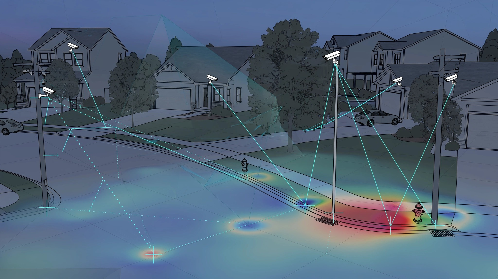

System and Method for Continuous Sub-Centimeter Ground Deformation Monitoring Using Distributed Residential Security Camera Photogrammetric Networks with Persistent Feature Point Tracking, Self-Calibrating Atmospheric Refraction Correction, and Graph Neural Network Strain Field Interpolation

Abstract
Disclosed is a system and method for detecting and mapping sub-centimeter ground surface deformation across residential neighborhoods by repurposing the existing installed base of rigidly-mounted outdoor security cameras (Ring, Nest, UniFi, Arlo, Eufy, etc.) as a persistent distributed photogrammetric sensor network. Each camera continuously observes a fixed scene containing permanent ground-anchored features: utility poles, fire hydrants, curb edges, manhole covers, survey monuments, building corners, and retaining walls. An edge-deployed persistent feature tracker maintains a library of high-confidence reference points per camera view and measures their apparent pixel displacement over time horizons ranging from weeks to years. A self-calibrating atmospheric refraction correction module exploits the diurnal and seasonal variation in atmospheric density visible across the camera network to separate true ground displacement from thermally-induced apparent motion. Camera-to-camera geometric constraints from shared visible landmarks enable network-wide bundle adjustment that resolves individual camera mount drift from true scene displacement. A graph neural network (GNN) interpolates the sparse displacement vectors from tracked feature points into continuous strain-rate tensor fields across the monitored area. The system outputs early warnings for sinkhole formation, landslide creep, groundwater withdrawal-induced compaction, expansive clay swell/shrink cycles, construction-induced settlement, and post-earthquake residual deformation, achieving spatial resolution orders of magnitude finer than satellite InSAR for urban areas at zero marginal sensor deployment cost.
Field of the Invention
This invention relates to geotechnical monitoring and ground deformation measurement, specifically to the use of distributed consumer security camera infrastructure for continuous, sub-centimeter-precision photogrammetric tracking of ground surface movement over urban and suburban areas.
Background
Ground deformation from subsidence, landslide creep, sinkhole formation, and expansive soil cycles causes an estimated $17 billion per year in structural damage in the United States alone (USGS). Sinkhole damage in Florida exceeds $400 million annually in insurance claims (Insurance Information Institute). Landslide losses average $3.5 billion per year with 25-50 fatalities (USGS).
Current monitoring technologies suffer from fundamental coverage-resolution tradeoffs:
- Satellite InSAR (Interferometric Synthetic Aperture Radar): Sentinel-1 provides 5×20 m resolution at 6-12 day revisit intervals. Achieves millimeter-class line-of-sight displacement accuracy over coherent surfaces but suffers from geometric distortion in urban canyons, temporal decorrelation from vegetation, and atmospheric phase screen artifacts that limit accuracy to 5-10 mm (Ferretti et al., 2020). Commercial services (TRE ALTAMIRA, SkyGeo) cost $50,000-200,000 per study area.
- Terrestrial LiDAR / Total Station: Sub-millimeter precision but requires physical deployment of instruments and trained surveyors. Cost: $2,000-5,000 per survey campaign. Typically performed annually or after triggering events. Cannot provide continuous monitoring.
- GNSS Continuous Operating Reference Stations (CORS): Millimeter-precision 3D positioning but station spacing is 50-70 km in the US CORS network. Dedicated monitoring installations cost $10,000-30,000 each. Insufficient spatial density for neighborhood-scale hazard detection.
- In-Place Inclinometers and Settlement Plates: Digitally-instrumented boreholes provide millimeter-precision tilt measurement at the installation point. Cost: $5,000-15,000 per borehole including drilling. Reserved for known hazard zones and construction monitoring.
- Fiber Optic Distributed Strain Sensing (DFOS): Brillouin and Rayleigh backscatter techniques achieve micrometer-level strain resolution along fiber routes. Requires purpose-installed fiber with coupling to ground. Cost: $500-1,000 per linear meter of instrumented length.
The gap: no existing system provides continuous, neighborhood-scale ground deformation monitoring at sub-centimeter precision without purpose-deployed sensors. The US has an estimated 80-100 million outdoor residential security cameras operating continuously, rigidly mounted to building structures, observing fixed scenes containing permanent ground-anchored landmarks. This infrastructure represents an untapped photogrammetric sensor network. The challenge is that apparent pixel displacements in camera imagery arise from three confounded sources: true ground displacement, camera mount drift (thermal expansion, fastener creep, wind vibration), and atmospheric refraction variation. Separating these requires network-level geometric constraints and atmospheric modeling that no prior system has addressed for consumer camera infrastructure.
Detailed Description
1. Persistent Feature Point Library Construction
Each participating camera builds a persistent feature point library from its fixed field of view. The system identifies high-confidence ground-anchored reference points using a multi-stage pipeline:
Feature candidate extraction: A SIFT/SuperPoint hybrid detector runs on frames captured during stable illumination conditions (clear sky, low wind, no precipitation). Features are extracted at 10-minute intervals during favorable conditions, yielding approximately 500-2,000 candidate points per camera view.
Persistence filtering: Over a 30-day initialization period, features are tracked across varying illumination (day/night, overcast/clear, shadow rotation) and weather conditions. Only features that maintain consistent appearance descriptors across at least 80% of sampled conditions advance to the persistent library. This eliminates vegetation, parked vehicles, seasonal decorations, and transient objects. Typical yield: 50-300 persistent features per camera.
Ground-anchored classification: A lightweight convolutional neural network classifies each persistent feature into categories: ground-anchored rigid (utility pole base, fire hydrant, manhole cover, building foundation corner, curb edge, survey marker); elevated rigid (utility pole top, building roofline, traffic sign); and non-rigid (fence, vegetation, flag). Only ground-anchored rigid features contribute to deformation measurement. Elevated features serve as atmospheric refraction calibration references (Section 3).
Sub-pixel localization: Ground-anchored features are localized to sub-pixel precision (0.1-0.3 pixel) using a combination of template-based correlation refinement and Gaussian fitting on the correlation peak. For a typical 1080p security camera with a 90-degree horizontal field of view covering a 30-meter-wide scene at 15 m distance, 0.1 pixel corresponds to approximately 1.4 mm of ground displacement. A 4K camera at the same geometry achieves 0.7 mm per 0.1 pixel.
2. Temporal Displacement Tracking
Once the persistent feature library is established, the system tracks apparent pixel position changes over multiple time scales:
Short-term (hourly): Dominated by atmospheric refraction fluctuations and camera mount thermal expansion. These signals are separated from true ground displacement through the atmospheric correction module (Section 3) and mount drift estimation (Section 4).
Medium-term (weekly to monthly): Captures seasonal soil moisture cycles, construction-induced settlement, and rapid subsidence events. After atmospheric and mount corrections, displacement time series are low-pass filtered with a 48-hour moving median to suppress remaining noise. Typical noise floor after correction: 2-5 mm.
Long-term (monthly to annual): Captures secular subsidence trends, slow landslide creep, groundwater compaction, and post-seismic relaxation. Time series are decomposed using seasonal-trend decomposition by Loess (STL) to separate annual cyclical components (expansive soil swell/shrink, freeze/thaw) from monotonic trends.
Displacement vectors are computed as the difference between current feature position and the baseline position established during the initialization period. The system maintains a rolling 30-day baseline that drifts with confirmed secular trends to preserve sensitivity to acceleration (rate changes) rather than total displacement alone.
3. Self-Calibrating Atmospheric Refraction Correction
Atmospheric refraction displaces the apparent position of ground features as air density varies with temperature and humidity gradients near the surface. For horizontal lines of sight at 1-2 m elevation (typical security camera mounting height), refraction can cause apparent vertical displacement of 5-15 mm over 30 m sight distance during strong thermal gradients (midday concrete heating).
The correction exploits two key observations:
Observation 1: Refraction affects elevated and ground features differently. Elevated features (utility pole tops at 10 m height) experience near-zero refraction because the line of sight passes through thermally well-mixed air. Ground features (hydrant base at 0.5 m height) experience maximum refraction through the thermal boundary layer. The differential displacement between co-located elevated and ground features directly measures the integrated refraction effect along that sight line.
Observation 2: The camera network provides spatial sampling of the atmospheric field. Multiple cameras observing the same ground feature from different angles and distances experience different refraction effects depending on their respective atmospheric paths. By requiring that the corrected displacement of a shared feature agree across all observing cameras (within noise bounds), the system solves for the atmospheric refraction field as a nuisance parameter in the network bundle adjustment.
The atmospheric model is parameterized as a thin turbulent boundary layer with temperature gradient T'(z) = T0 + γz for z < hBL, where hBL is the boundary layer height (typically 0.5-3 m over paved surfaces). The refraction integral along each sight line is computed using the Ciddor equations (Ciddor, 2002) adapted for near-surface paths. The parameters (T0, γ, hBL) are estimated per spatial tile (100 m × 100 m) per time epoch from the over-determined system of elevated/ground feature differential displacements across cameras within that tile.
4. Camera Mount Drift Estimation and Separation
Camera mounts experience slow drift from thermal cycling, fastener relaxation, and wind-induced fatigue. These rigid-body motions (3 rotations + negligible translation for pole/wall mounts) cause correlated apparent displacement across all features in the camera view.
Mount drift is separated from ground displacement using the overdetermined nature of the feature library. True ground deformation produces spatially structured displacement patterns (strain fields). Mount drift produces displacement patterns consistent with rigid-body rotation around the camera center. A robust estimation framework fits a 3-parameter rotation model to the full set of feature displacements per camera per time epoch. Residuals from this fit represent ground deformation plus noise. The robust estimator (iteratively-reweighted least squares with Huber loss) down-weights features that violate the rigid rotation model, which are precisely those experiencing anomalous ground deformation.
For cameras with overlapping fields of view, the mount drift parameters are further constrained: shared features observed by both cameras must show consistent corrected displacement after removing each camera's respective mount drift. This cross-camera constraint eliminates degenerate solutions where mount drift absorbs real deformation.
5. Network Bundle Adjustment and Displacement Consensus
The complete network adjustment jointly estimates three categories of parameters: (a) mount drift rotation for each camera at each time epoch, (b) atmospheric refraction parameters per spatial tile per time epoch, and (c) ground displacement vectors for each tracked feature point. The system is heavily over-determined: a neighborhood with 200 participating cameras tracking 100 ground features each produces 20,000 displacement observations to constrain approximately 600 mount parameters + 100 atmospheric parameters + 6,000 displacement parameters (3D displacement per unique ground point).
The bundle adjustment is formulated as a weighted least-squares problem minimized using sparse Levenberg-Marquardt optimization. The Jacobian structure is naturally sparse because each observation (feature displacement in one camera at one epoch) depends only on that camera's mount drift, the local atmospheric parameters, and that feature's ground displacement. The system converges in 5-10 iterations for typical network sizes.
Features observed by multiple cameras receive displacement estimates with substantially lower uncertainty than single-camera features, following the standard weighted least squares variance reduction. Cross-camera consensus provides an internal quality metric: features whose multi-camera displacement estimates disagree beyond expected noise levels are flagged for review (possible mount instability or feature misidentification).
6. Strain Field Interpolation via Graph Neural Network
The sparse displacement vectors from tracked feature points (irregularly distributed, density of approximately 1-5 points per 100 m² in suburban areas) are interpolated into continuous strain-rate tensor fields using a graph neural network (GNN).
The GNN operates on a Delaunay triangulation of feature point locations. Node features include the displacement vector, displacement rate, measurement uncertainty, and local geology metadata (soil type, groundwater depth from public well logs, proximity to known fault lines). Edge features encode inter-point distance, relative elevation, and the geomechanical connectivity estimated from surface geology maps.
The GNN (3-layer GraphSAGE architecture, 128-dimensional hidden representations) is trained on synthetic datasets generated from finite-element geomechanical models of subsidence, sinkhole development, and landslide creep, with realistic noise injection calibrated to the camera network measurement characteristics. Transfer learning fine-tunes the model on observed displacement patterns from regions with known ground truth (InSAR-validated subsidence bowls, surveyed landslide areas).
The output strain-rate tensor field is decomposed into volumetric strain (compaction/dilation), maximum shear strain, and principal strain directions. Anomalous strain concentrations trigger progressive alert levels.
7. Hazard Detection and Alert Generation
The system classifies detected deformation patterns into geohazard categories using characteristic strain field signatures:
- Sinkhole precursor: Circular or elliptical compressive strain concentration with diameter 2-20 m, rate > 5 mm/year, surrounded by extensional ring. Alert threshold: 10 mm cumulative displacement within a 10 m radius. Based on documented precursory deformation patterns from the Florida Geological Survey sinkhole studies (Tihansky, 2018).
- Landslide creep: Translational shear strain aligned with local slope direction. Rate > 10 mm/year with seasonal acceleration during wet season. Displacement field consistent with rotational or translational failure surface geometry.
- Groundwater withdrawal compaction: Regional subsidence bowl extending 100+ m, centered on pumping well clusters. Rate 5-50 mm/year. Correlated with groundwater level data where available (USGS monitoring wells).
- Expansive soil cycle: Annual swell/shrink pattern with amplitude 10-30 mm, phase-locked to precipitation and temperature. Spatial extent correlates with mapped expansive clay deposits. STL seasonal component exceeds 2× the noise floor.
- Construction-induced settlement: Progressive compressive strain adjacent to active construction sites, propagating outward with time. Characteristic temporal profile: rapid onset, decelerating asymptote. Correlated with building permit records.
Alerts are graded by severity (advisory, watch, warning) based on displacement rate, acceleration, cumulative magnitude, and proximity to structures. Output channels include municipal engineering dashboards, homeowner notifications, insurance risk feeds, and utility routing advisories.
8. Privacy-Preserving Architecture
All image processing occurs on-device or on a local edge gateway. Raw imagery never leaves the camera or its local network. The system transmits only: feature point pixel coordinates (2 floats per point per epoch), atmospheric correction parameters (3 floats per tile per epoch), and mount drift rotation parameters (3 floats per camera per epoch). No visual content, no imagery, no personally identifiable information. Feature point coordinates are converted to anonymous geographic coordinates using the camera's registered position and orientation. The camera registration process itself uses only a single calibration image captured during setup.
9. Figures Description
- Figure 1: System architecture showing the distributed camera network with edge processing, atmospheric tile grid, network bundle adjustment, GNN interpolation, and hazard classification pipeline.
- Figure 2: Feature point classification hierarchy. Ground-anchored rigid features (contributing to deformation measurement) vs. elevated rigid features (atmospheric calibration) vs. non-rigid features (excluded).
- Figure 3: Atmospheric refraction geometry for a horizontal sight line at camera mounting height, showing the differential refraction effect on ground vs. elevated features and the self-calibration principle.
- Figure 4: Simulated strain field output for a developing sinkhole precursor, showing the characteristic compressive center with extensional ring, interpolated by the GNN from 47 sparse displacement observations over a 200 m × 200 m area.
- Figure 5: Time series decomposition (STL) of tracked feature displacement showing separation of diurnal atmospheric noise, seasonal expansive soil cycle, and secular subsidence trend over a 24-month monitoring period.
Claims
- A system for continuous ground deformation monitoring comprising: a distributed network of rigidly-mounted consumer outdoor security cameras, each running an edge-deployed persistent feature point tracker that identifies, classifies, and tracks ground-anchored reference points in its fixed field of view at sub-pixel precision; wherein apparent pixel displacements of tracked features are decomposed into true ground displacement, camera mount drift, and atmospheric refraction components through a network-level bundle adjustment that jointly estimates all three parameter categories.
- The system of claim 1, wherein persistent feature point library construction comprises extracting feature candidates across varying illumination and weather conditions over an initialization period of at least 14 days, filtering to retain only features with consistent appearance descriptors across at least 75% of sampled conditions, and classifying retained features as ground-anchored rigid, elevated rigid, or non-rigid using a convolutional neural network.
- The system of claim 1, wherein atmospheric refraction correction exploits the differential apparent displacement between co-located ground-level and elevated reference points observed by the same camera to estimate the near-surface atmospheric refraction integral along each sight line, parameterized as a thermal boundary layer model with spatially-varying temperature gradient and boundary layer height.
- The system of claim 1, wherein camera mount drift is estimated as a 3-parameter rigid-body rotation per camera per time epoch using robust regression on the full set of feature displacements in each camera view, with the rotation model absorbing correlated apparent motion while preserving spatially-structured ground deformation residuals.
- The system of claim 1, wherein features observed by multiple cameras with overlapping fields of view are constrained to yield consistent corrected displacement vectors across all observing cameras, providing internal quality metrics and variance reduction for multi-camera feature points.
- The system of claim 1, further comprising a graph neural network that interpolates sparse corrected displacement vectors from tracked feature points into continuous strain-rate tensor fields over the monitored area, operating on a Delaunay triangulation of feature point locations with node features including displacement, uncertainty, and local geological metadata.
- A method for detecting geohazard precursors comprising: collecting sub-pixel feature displacement measurements from a distributed network of consumer security cameras; jointly estimating and removing atmospheric refraction and camera mount drift effects through network-wide geometric constraints; interpolating corrected displacements into strain fields; and classifying spatially-structured strain anomalies into geohazard categories including sinkhole precursors, landslide creep, groundwater compaction, expansive soil cycles, and construction-induced settlement based on characteristic strain field signatures.
- The method of claim 7, wherein sinkhole precursors are identified by circular or elliptical compressive strain concentrations with diameter 2-20 m, surrounded by extensional strain rings, exhibiting displacement rates exceeding a configurable threshold.
- The method of claim 7, wherein all image processing occurs on-device or on a local edge gateway, and only feature point coordinates, atmospheric parameters, and mount drift parameters are transmitted to the aggregation service, with no raw imagery or personally identifiable information leaving the local network.
- The system of claim 1, wherein displacement time series are decomposed using seasonal-trend decomposition to separate cyclical components from monotonic secular trends, and hazard alerts are triggered by anomalous acceleration of the trend component or emergence of new cyclical modes not attributable to known environmental drivers.
Prior Art References
- USGS Ground Subsidence Map : $17B/year structural damage from ground deformation in the US
- Insurance Information Institute Sinkhole Statistics : $400M+ annual sinkhole claims in Florida
- Ferretti et al., Remote Sensing 2020 : Satellite InSAR persistent scatterer methodology and 5-10 mm accuracy limits
- Ciddor, Applied Optics 2002 : Refractive index of air equations for optical path correction
- Tihansky, Engineering Geology 2018 : Sinkholes of west-central Florida: precursory deformation patterns
- Statista 2025 : 80-100M residential outdoor security cameras deployed in the US
- Durham Geo Slope Indicator : In-place inclinometers for borehole deformation monitoring
- Weighted Least Squares Estimation : Standard variance reduction framework for multi-observation parameter estimation
- Hamilton et al., NeurIPS 2017 : GraphSAGE: Inductive representation learning on large graphs
- OpenCV : Open-source computer vision library with feature detection and tracking implementations
- DeTone et al., CVPR 2018 : SuperPoint: Self-supervised interest point detection and description